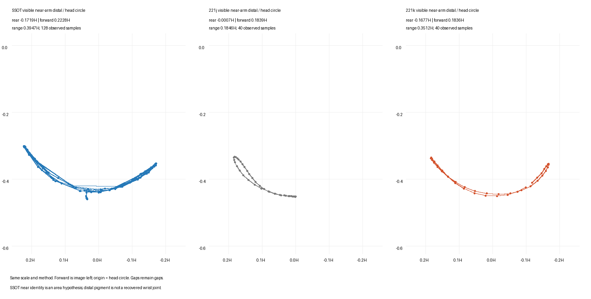
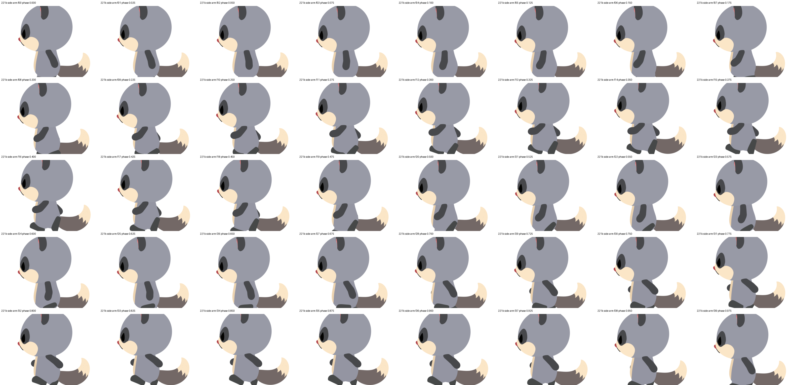
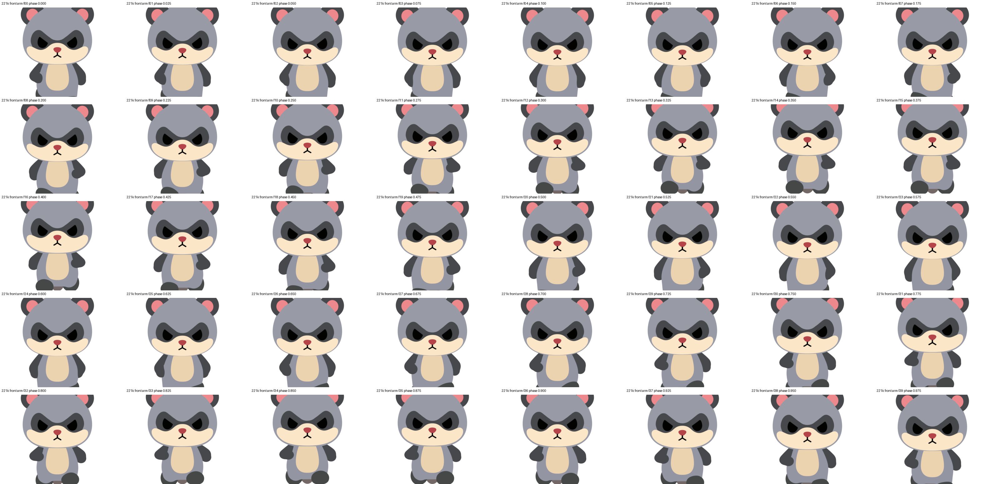

2026-10-02。221j（脚を振り子にした版）の脚はそのままに、腕だけを作り直しました。処理はすべて Windows 機で行っています。
SSOT の腕は、肩を支点に前から真下を通って後ろまで U 字に往復していました。今までの腕は前から真下までの半分しか動かず、後ろへは振っていませんでした（以前「後ろは垂らす位置まで・後ろ 20° 上限」と決めていたため）。ご判断どおりこの決まりを今回の走りで見直し、後ろまで振るようにしました。手が前の頂点に来る瞬間も、SSOT と同じく反対の足の着地より少し早めました（0.175 周期）。
| SSOT | 221j | 221k | |
|---|---|---|---|
| 手の前への到達 | 0.22H | 0.18H | 0.18H |
| 手の後ろへの到達 | 0.17H | 0.00H（後ろに行かない） | 0.17H |
| 手の振れ幅 | 0.39H | 0.18H | 0.35H |

（手先の通り道。左：SSOT ／ 中：221j ／ 右：221k、同じ測り方）
1/4 速度：

